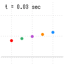
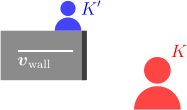
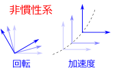
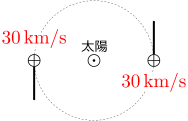
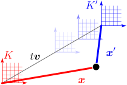
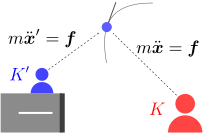
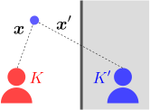
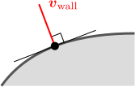
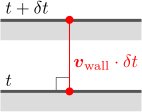
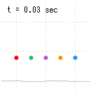

4.動く壁との衝突

この章のシミュレーション（クリックで計算開始）：
壁が動く場合の弾性衝突の公式を求めたい

動いている壁と弾性衝突するボールの運動

このように壁が動いている場合、たとえ弾性衝突であっても、衝突の前後で速度の大きさが変化するので、前章で述べた弾性衝突条件
よって、
相 対 性 原 理 に よ る 弾 性 衝 突 公 式 の 導 出 壁 面 の 速 度 の 導 出 ボ ー ル の 運 動 の 計 算
4.1相対性原理による弾性衝突公式の導出
壁とともに動く観測者
冒頭でも述べた様に、まず着目するのは、右図のように、ある観測者
これにより、
一般には、
【4.1-注1】相対性原理

ニュートンの運動方程式
- ある系
- 全ての慣性系において、物理法則は全く同じである。即ち、右上図のように、慣性系
補足

[1] 今まで気にしてこなかったが、逆に、ニュートンの運動方程式が成り立たない系（＝非慣性系）も存在する。これは、観測者自身が自転・加速度運動している場合であり（右図）、力が働いていない物体であっても、加速度を持っているように見える。例えば、地球は自転しているので、地上の観測者は厳密には非慣性系である。これは、力を受けていないはずの夜空の星が、24時間かけて地球（地軸）の周りを1周しているように見えることからも分かる（円運動は加速度なしでは実現できない）。とはいえ、キャッチボールのように短時間で終わる実験ではこの影響は無視できるし、実際これまでそうしてきた。
[2] 日常的に言えば、乗り心地の良い電車の中で目を閉じている時、「電車が止まっているか」それとも「等速度で動いているか」は判別できないということである（自分自身が実験装置になっている）。物理学的には、例えば、任意の物体の質量

相対性原理を検証するための1つの方法として、日時を変えて同じ実験を繰り返すことが考えられる。地球の自転により、地球上の同一地点であっても昼と夜では約
速度
まず、速度
【4.1-注2】ガリレイ変換：式(

2つの慣性系
この時、
補足

まず、動いたり変形したりしている壁を考えているので、拘束条件

さて、ガリレイ変換(式 微 分 の 連 鎖 則 を 使 っ て で の 微 分 に す る （ 以 下 の 【 注 】 の 式 ）
【4.1-注3】合成関数の微分公式（連鎖律）
任意の多変数関数
（ 以 下 の 【 注 】 参 照 ）
導出
【4.1-注4】ベクトル値関数の全微分
ベクトル値関数
導出
弾性衝突の公式：式(
以上により、
4.2壁面の速度

衝突点における壁面の速度
前章の3.1節で述べたように、

式(
衝突公式（完成版）
以上をまとめると、時間変化する壁との弾性衝突における反射速度
なお、ここまで弾性衝突条件を考えてこなかった（必要がなかった）。弾性衝突条件を実際に書下してみると、以下の【4.2-注1】のように、壁との相対速度が保存するという形になる。この弾性衝突条件と、ダランベールの原理
【4.2-注1】壁が時間変化している場合の弾性衝突条件
壁が速度
導出
4.3ボールの運動
この節では時間変化する壁の例題を2つ扱う。1つ目は、平坦な床が上下している場合、2つ目は、床が変形して波打っている場合である。
例題1：平坦な床の場合
2次元
数値計算を行うと右図のようになる。グリッドの間隔は
例題2：変形する床の場合
変形する床の例として、2次元平面において、以下のような拘束条件をとる（右図）：
微分

数値計算を行うと右図のようになる。グリッドの間隔は
【4.3-注1】双曲線関数
双曲線関数について、必要な式をまとめておく：